We acknowledge the Traditional Custodians of Country throughout Australia. We pay our respects to Elders past and present.
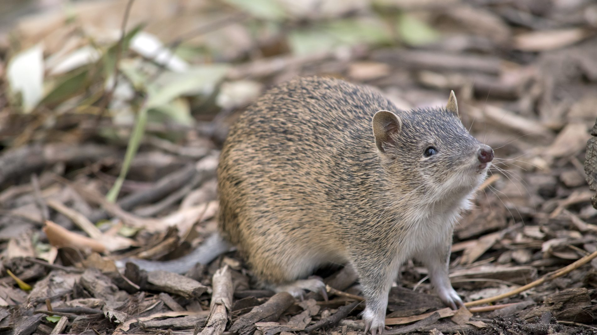
Saving Species
Bandicoot Superhighway
Mount Lofty Ranges & Fleurieu Peninsula, South Australia · Since 2022
South Australia once had eight species of bandicoot. One is left, and it spends every night quietly rebuilding the soil under the Adelaide Hills.
44Hectares restoredHabitat rehabilitation and restoration across the project area.
34,669Native seedlingsPlanted to thicken ground cover and link isolated patches.
100+Wildlife camerasInstalled to record who is actually using the corridors.
Figures from October 2025.
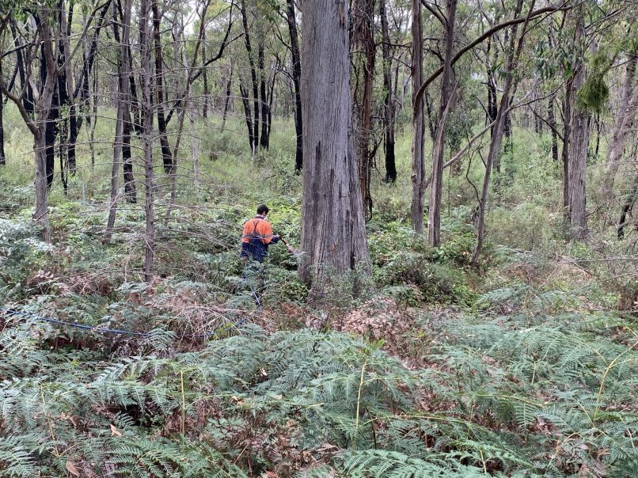
Thick ground cover is not scenery for a bandicoot. It is the whole habitat.
The problem
Eight species became one, and then the one ran out of road
The Southern Brown Bandicoot is the last of the eight bandicoot species South Australia once held. It is listed as endangered under the EPBC Act, and unlike the possums and gliders it shares a forest with, it lives entirely on the ground. That is what makes it so exposed. A bandicoot needs dense native undergrowth to move through, feed in and hide under. Clear the understorey and the animal has nowhere left to be.
Across the Fleurieu Peninsula and the Mount Lofty Ranges, clearing for farming, housing and roads has cut continuous habitat into isolated pockets. Foxes and cats hunt the open ground in between, and bushfires now arrive more often than the vegetation can recover from. Genetic work in South Australia has already measured the result, with gene flow between these pockets falling away as the populations lose contact with each other.
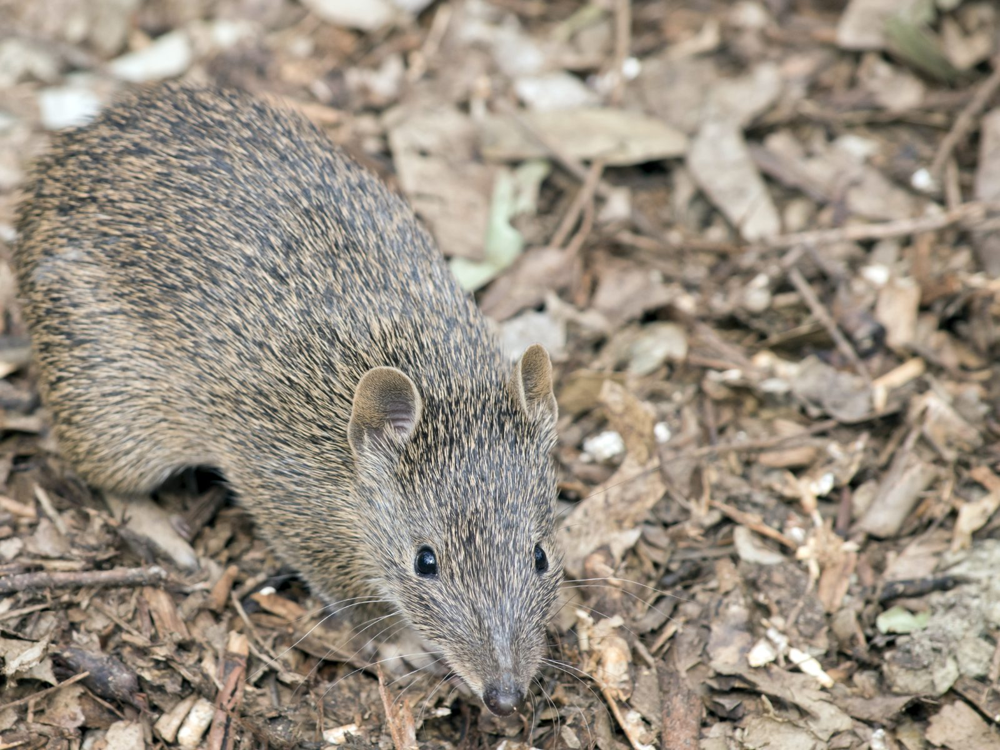
Why it matters
Rather than simply living in its habitat, the bandicoot rebuilds it
A bandicoot weighs somewhere between four hundred grams and a little over a kilogram, and it spends its nights digging. Research at Yalgorup National Park in Western Australia found that a single animal digs around forty-five foraging pits a night and shifts roughly 10.7 kilograms of soil, which comes to close to four tonnes in a year.
None of that digging is incidental. It breaks up compacted ground so water soaks in instead of running off, and it turns buried organic matter back to the surface. The pits themselves catch water and seed. Seedlings grown in soil a bandicoot has worked come up taller, heavier and faster than seedlings in soil it has not touched.
Lose the bandicoot and you do not only lose an animal. You lose the thing that has been maintaining the soil the whole time.
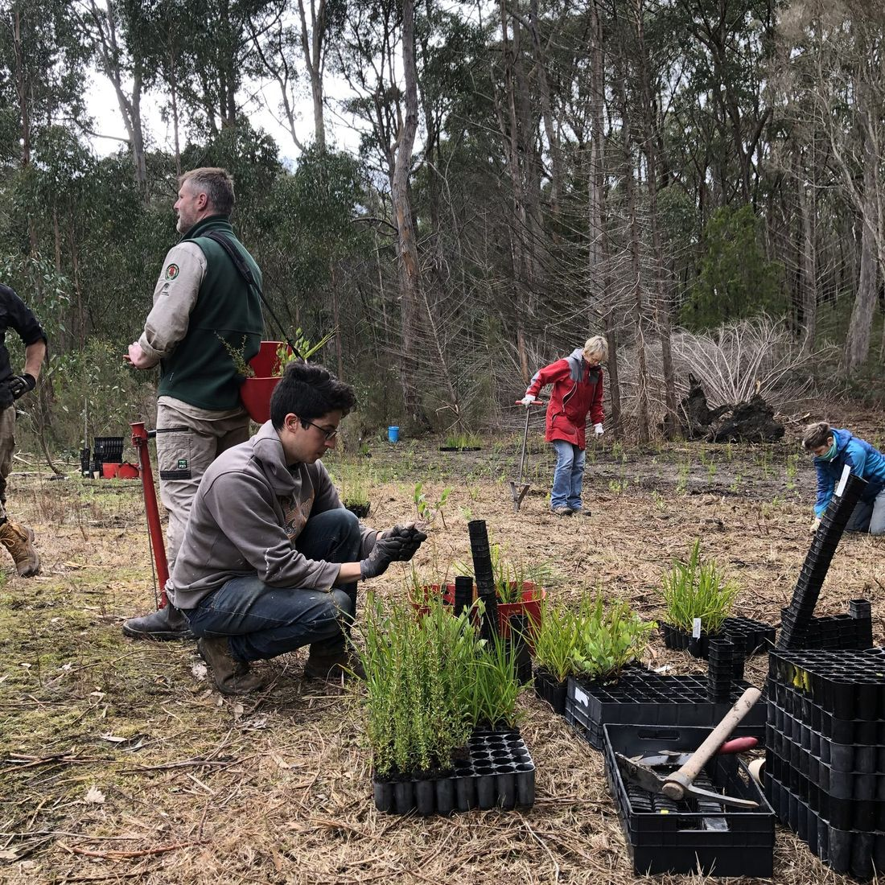
Tubestock ready to go in, one gap at a time.
The approach
The superhighway is not a road. It is undergrowth.
The name is honest about the function and misleading about the form. What we are building with our partners is a connected network of thickly vegetated ground that a small animal can cross without ever breaking cover.
Some of it is restoration inside bushland that still stands. Some of it is new planting straight across the gaps between remnants. The rest is management: weed control, and burns planned to bring back the low dense growth a bandicoot shelters in rather than strip it out. Nearly thirty-five thousand seedlings have gone into 44 hectares so far, and translocation trials are planned to extend the animal’s range once there is somewhere worth moving it to.
Without targeted conservation, up to 84 per cent of local populations could disappear within a century.
Genetic studies of Southern Brown Bandicoot populations, South Australia
The evidence
More than a hundred cameras, watching the gaps.
Restoring habitat is a guess until something walks through it. More than a hundred wildlife cameras are now placed across the project area, and they are how we know whether the corridors are being used, by what, and when. They also pick up the foxes and cats, which matters just as much.
The pictures that come back are not beautiful, and that is rather the point of them. They are timestamped, located and hard to argue with.
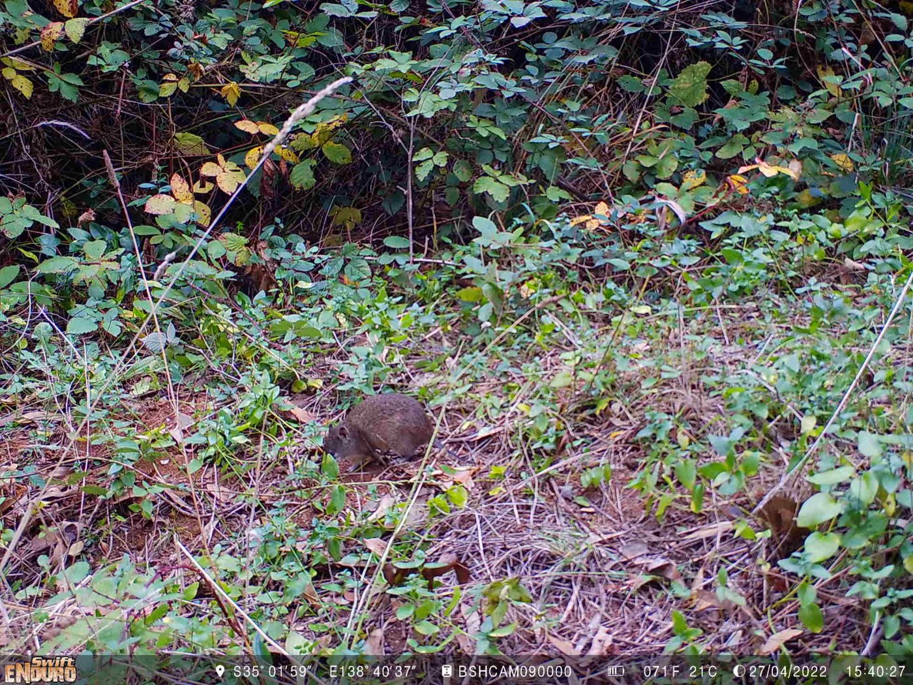
A bandicoot on a project camera in the Adelaide Hills, April 2022.
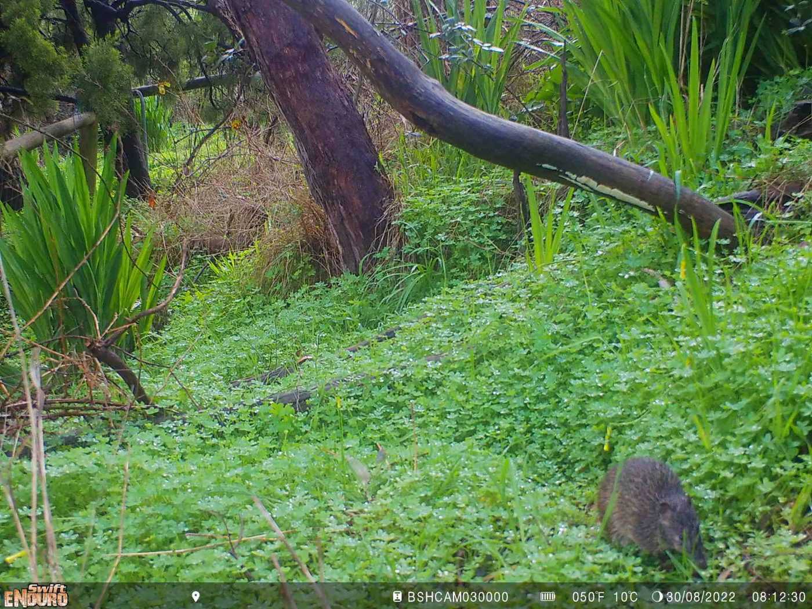
The same landscape four months later, August 2022.
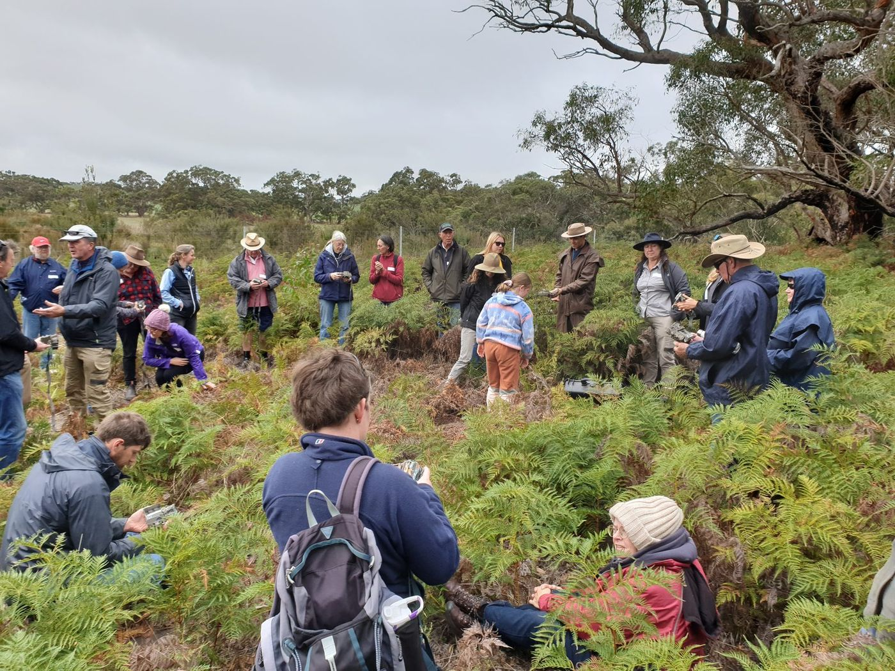
A community camera workshop in the project area.
The community
The cameras belong to the neighbourhood
None of this is run by a research team working alone. Landholders, Landcare volunteers and neighbours are trained at workshops to place the cameras, check them and identify whatever turns up on the card.
It covers far more ground than a small team ever could. It also means the people who own the land know precisely what is living on it, which changes how they manage it long after any project finishes.
On the ground
Thirty-five thousand seedlings is a great many holes.
The planting is done by volunteers, Landcare groups, corporate teams and landholders, season after season. Every seedling goes in with a guard and a stake, which is the only reason any of them survive their first summer.
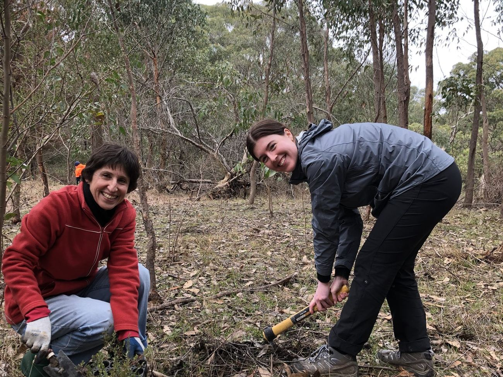
Volunteers planting understorey species between remnants.
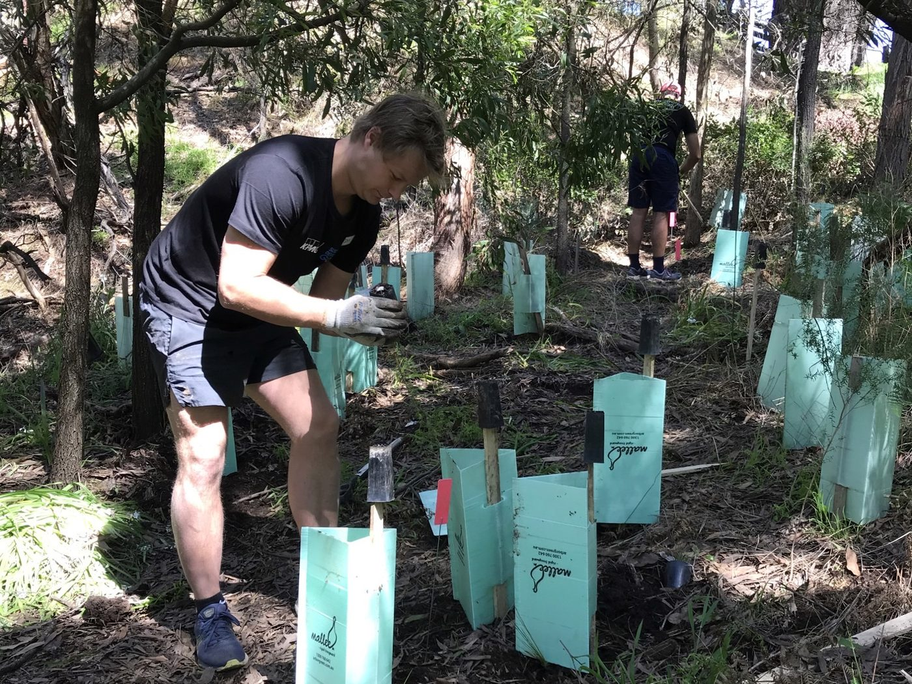
A corporate volunteering day on one of the corridor sites.
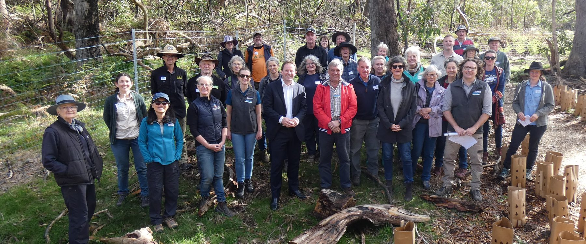
Partners, landholders and volunteers at a project site in the Mount Lofty Ranges.
In the field
The work behind the numbers
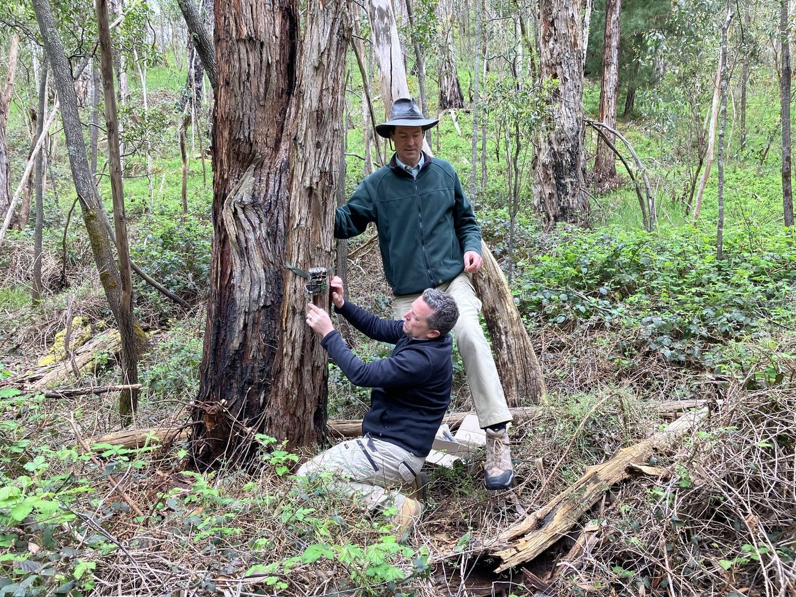
Mounting a camera on a corridor site.
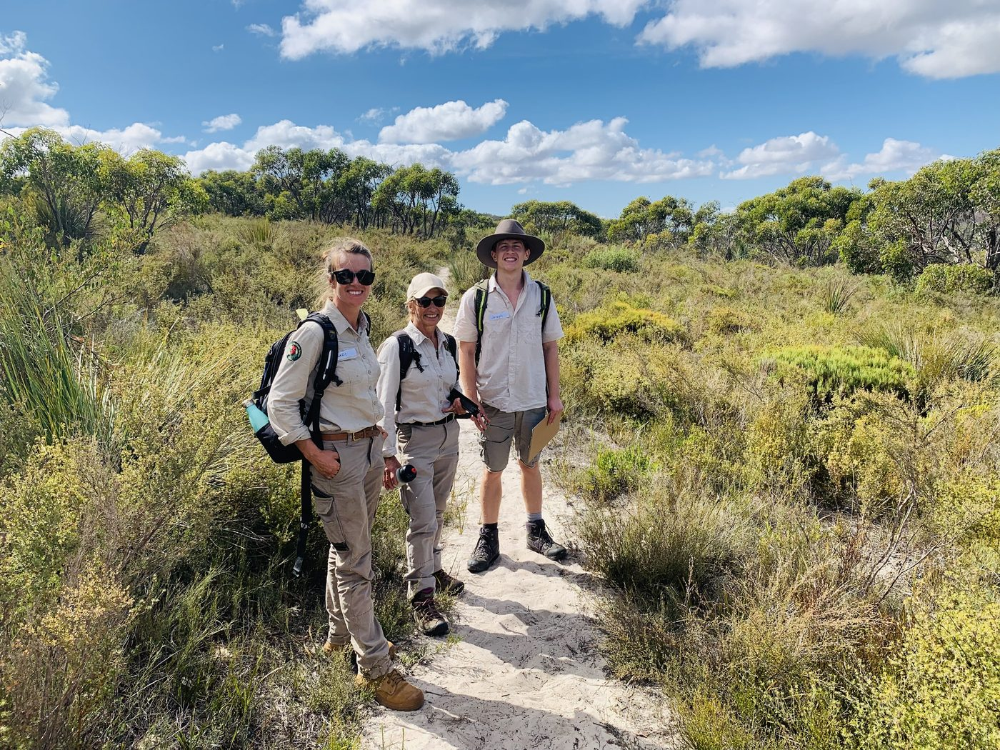
Survey work in heath country.
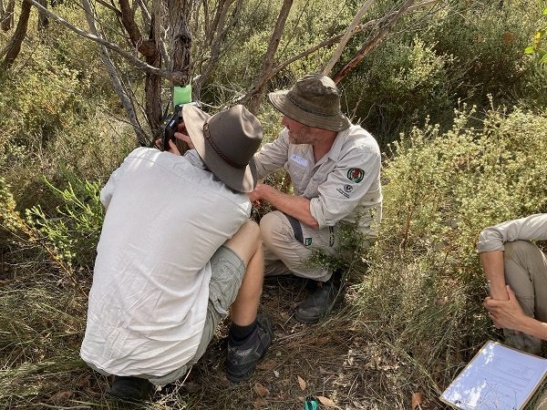
Checking a camera position under cover.
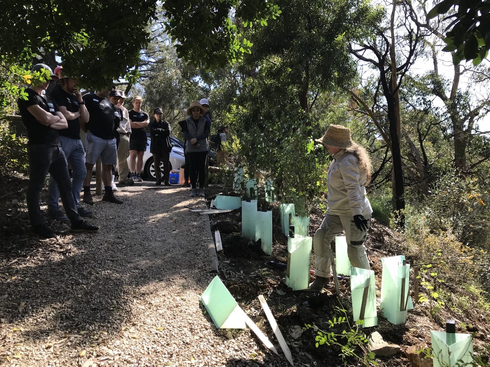
A site walk through recent plantings.
What happens next
A species that pays its own way.
The Southern Brown Bandicoot has already shown it can hold on in a landscape people have heavily modified. It persists in roadside reserves and drainage lines wherever the undergrowth is thick enough and the predators are kept down.
That is the entire argument for this work. The animal does not need wilderness. It needs cover, and it needs the patches joined up, and both of those are things people can build in a few seasons. Four tonnes of soil turned over every year, per animal, at no cost to anyone. It is worth keeping.
 Saving Species
QLD
Saving Species
QLD